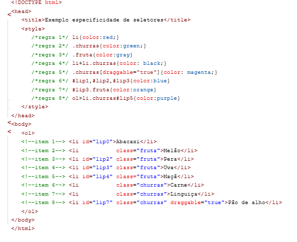

Especificidade dos Seletores CSS
Seguindo as seguintes instruções:

No fim temos:
- Abacaxi
- Melão
- Pera
- Uva
- Maçã
- Carne
- Linguiça
-
Pão de alho
Explicação
A especificidade define qual regra CSS possui maior prioridade
quando mais de uma regra pode ser aplicada ao mesmo elemento.
- Abacaxi: recebe vermelho pela regra 1.
- Melão: recebe cinza pela regra 3.
- Pera: recebe azul pela regra 6, pois possui ID.
- Uva: recebe laranja pela regra 7, pois possui
ID e classe.
- Maçã: recebe cinza pela regra 3.
- Carne: recebe preto pela regra 4.
- Linguiça: recebe preto pela regra 4.
- Pão de alho: recebe magenta pela regra 5,
pois possui a classe churras e o atributo draggable="true".